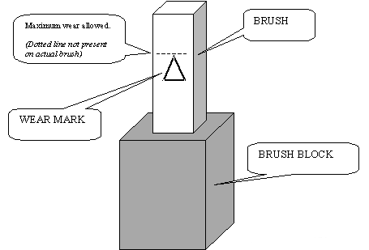

Expected signal brush life is 5 million gantry rotations.
Expected power brush life is 2.5 million gantry rotations.
Alcohol and its contaminants will significantly reduce brush tip life.
Remove the brush block as per the System Service Manual.
| NOTE: | Do not touch brushes with your fingers. The skin oils will contaminate the brush and reduce usable life and potentially create future failures. |
| NOTE: | Since brushes are spring-loaded to ensure constant contact with the slip ring during operation, when the block is removed, the springs will relax forward causing the brushes to protrude further from their holders; however, the brushes will not eject from the block! |
| NOTE: | If brush is to be re-used make sure you install it in the same orientation as removed. The brush was seated/conditioned in that position. |
Inspect each brush tip for wear. Each tip will have a triangle stamped on one side (see Illustration 1). When the brush wears to the point of the triangle, the brush must be replaced. Refer to the System Service Manual for details on brush replacement.
Refer to the System Service Manual for details on how to reinstall the brush block.
| NOTE: | Brush tips are extremely brittle. Do not apply lateral force, as they will break. You must replace any brush that has been damaged in this fashion. |
Illustration 1: Inspection of Brush Tip for Wear
